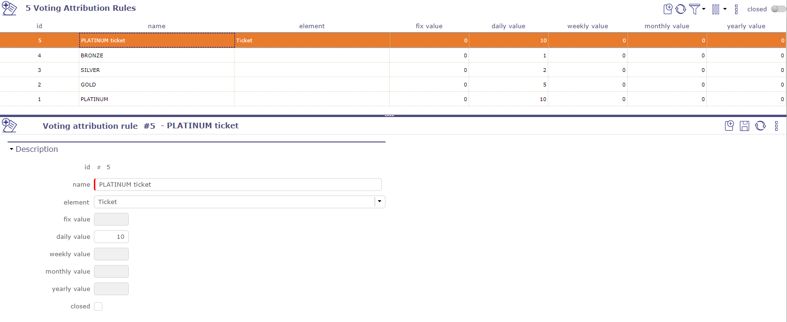
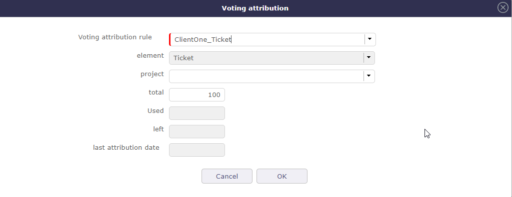
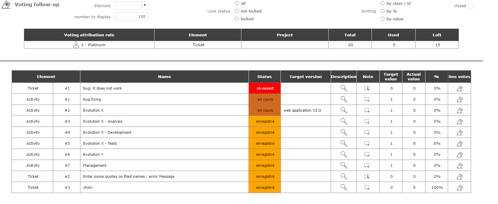
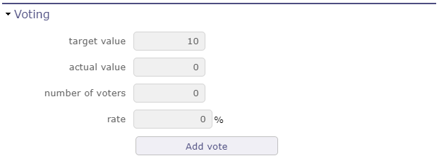
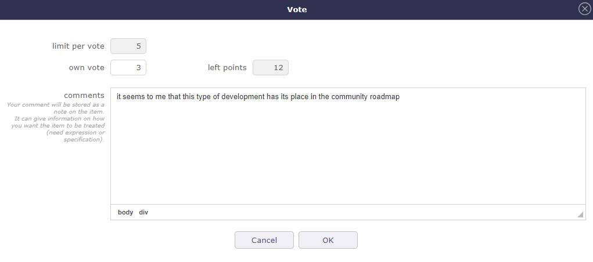
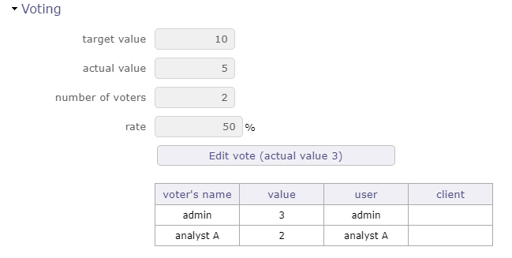

Collaboration¶
Gestion des votes¶
ProjeQtOr donne aux utilisateurs la possibilité de voter sur des tickets, des activités, des demandes de changement ou des exigences.
La fonctionnalité de vote est un module et devra être activée via la gestion des modules pour être utilisée.
Pour rendre un élément votable, vous devez créer des règles d’utilisation.
Le principe est d’attribuer des points aux utilisateurs afin qu’ils puissent voter sur un élément particulier.
Voir aussi
Règle d’attribution des votes¶
Les points sont attribués à un client et ses contacts ou à un utilisateur.
Il est possible d’attribuer des points fixes ou d’attribuer des points à une fréquence donnée.
L’utilisateur peut utiliser ses propres points ou les points du client auquel il appartient en tant que contact.
L’attribution est recalculée lorsque l’utilisateur se connecte, pour lui-même et pour le client auquel il appartient.
Le calcul est basé sur la dernière date d’attribution des points de vote.

Écran des règles d’attribution des votes¶
Sur l’écran des règles de vote, cliquez sur  pour créer une nouvelle règle.
pour créer une nouvelle règle.
Renseignez l’un des éléments de vote. Si le champ est laissé vide, l’attribution concernera tous les éléments de vote en même temps.
Renseignez une valeur (nombre de points) à donner à l’utilisateur.
Valeur fixe
Vous donnez un nombre de points bien défini qui ne changera pas.
Pour réattribuer des points, vous devez recréer une nouvelle règle d’attribution.
Périodicité des valeurs
Vous donnez un nombre de points qui s’incrémentera à intervalles réguliers.
Chaque jour, chaque semaine, chaque mois ou chaque année, l’utilisateur recevra le nombre de points saisi.
Attribution¶
Sur l’écran client ou utilisateur, dans la section Attribution des votes, vous ajoutez les règles créées au préalable.
Cliquez sur  pour ajouter une règle.
pour ajouter une règle.
La fenêtre contextuelle s’ouvre et vous pouvez choisir la ou les règles qui correspondent à vos besoins.

Fenêtre contextuelle d’attribution des votes¶
Les informations sont récupérées automatiquement depuis la règle d’attribution et l’historique des points dépensés.
Vous pourrez suivre l’évolution de vos points directement sur l’écran client ou utilisateur.
Règle d’utilisation des votes¶
Pour pouvoir voter, il est nécessaire de créer des règles pour l’utilisation des votes.
Comment l’utilisateur va et peut utiliser ses points, sur quel élément et comment convertir et assimiler des points à des jours de charge.

Cliquez sur pour créer une nouvelle règle
Le projet n’est pas obligatoire. S’il est renseigné, les points ne seront utilisables que sur les éléments de ce projet.
Le votant peut voter sans avoir les droits de mise à jour de l’élément, juste avec des droits de « lecture » sur l’élément et un certain nombre de points.
Le votant peut retirer ses points d’un élément pour les mettre sur un autre.
Statut de blocage
À un stade (statut à définir), l’élément peut être bloqué : les points ne peuvent plus être modifiés ou supprimés.
conversion des points
Ratio de conversion du travail estimé en nombre de points.
Par exemple avec un ratio de 2, un ticket avec 1,5 travail estimé aura des points cibles de 3,0
Valeur fixe
La valeur fixe n’est renseignée que si la règle d’attribution liée à la règle d’utilisation est renseignée comme valeur fixe.
Points maximum par vote.
Vous pouvez fixer un maximum de points à utiliser sur un élément votable.
Si vous fixez cette valeur, vous ne pourrez jamais dépenser plus que cette valeur sur l’élément.
Capacité de vote négatif
Le votant peut voter négativement. C’est un bon moyen de montrer votre désintérêt ou une façon de mentionner que vous n’aimez pas l’idée générale de l’élément.
Vote¶
Lorsqu’un élément votable est défini, le tableau d’attribution des votes est disponible sur les écrans respectifs des éléments.

Section de vote¶
La valeur cible n’est renseignée que si vous avez du travail estimé sur l’élément.
Travail estimé sur les tickets et les exigences et charge de travail validée sur les activités.
Voir : Dates et durée
Astuce
Conversion
ValeurCible = ceil (travailPlanifié * tauxConversionTravailPoints)
Si travail = 0,5j | taux = 3 –> points = 2
Il n’y a pas de valeur décimale. Arrondir à l’entier supérieur.
Si travail = 5j | taux = 2 –> points = 10
Cliquez sur le bouton de vote pour accéder à la fenêtre contextuelle de vote.

Fenêtre contextuelle de vote¶
Renseignez le nombre de points que vous souhaitez utiliser pour ce vote.
Limite par vote
indique le nombre maximum de points que vous pouvez utiliser pour voter sur cet élément.
Vote personnel
L’utilisateur utilise ses points en son propre nom.
Vote client
L’utilisateur utilise les points attachés au client en tant que contact.
Points restants
Indique votre nombre de points restants pour l’utilisateur et pour le client.
Commentaire
Les commentaires sont ajoutés comme note sur la page de l’élément.
Lorsqu’un utilisateur/client a voté, un tableau de suivi vous permet de voir qui a voté et combien de points ont été attribués.
Le taux indique le pourcentage d’avancement pour le vote de l’élément selon la valeur cible et le nombre de votes.
Sur le Kanban, ce pourcentage est reflété par le remplissage en couleur de l’icône de vote.
Pour modifier ou supprimer votre vote, cliquez sur le bouton de modification du vote. Laissez le champ vide ou renseignez 0 pour annuler votre vote.
Suivi des votes¶
La zone en haut de l’écran vous permet de voir les règles d’attribution qui vous sont liées.
La zone en bas de l’écran vous permet de voir les éléments votés, triés par % de votes décroissant.

Écran de suivi des votes¶
Les filtres permettent de restreindre la vue des éléments et de les trier.
Cliquez sur  pour afficher le détail de l’élément dans une fenêtre contextuelle.
pour afficher le détail de l’élément dans une fenêtre contextuelle.
Cliquez sur  pour voir ou ajouter une note.
pour voir ou ajouter une note.
Cliquez sur  pour afficher le tableau de vote.
pour afficher le tableau de vote.
Cliquez sur l’ID de l’élément votable pour accéder à l’écran de l’élément.
Sur cet écran, un chef de projet (droits à définir) peut modifier la version cible et le statut d’un ou plusieurs éléments.
Suivi de l’attribution des votes¶
L’écran de suivi de l’attribution des votes vous permet de voir les éléments votés par un utilisateur.
Nom d’utilisateur
Nom du client s’il est le contact de ce dernier.
La règle d’attribution qui lui est liée.
L’élément affecté par la règle d’attribution.
Le statut
La version cible
Le projet s’il a été informé de la règle d’utilisation liée à l’élément.
Les points acquis, dépensés et restants

Écran de suivi de l’attribution des votes¶
Plusieurs filtres permettent de restreindre l’affichage par utilisateur, client et/ou élément.
Vote sur l’élément¶
Il est possible de voter sur des tickets, des demandes de changement et des exigences.
Dans l’onglet détail de chaque élément, trouvez la section de vote. La valeur cible, la valeur actuelle, le nombre de votes et le taux de remplissage sont affichés.
Cliquez sur le bouton de vote pour attribuer un vote sur l’élément sélectionné.

Section de vote¶
Dans la fenêtre de vote, plusieurs informations telles que la limite maximale de points du vote que vous pouvez utiliser sur le vote de l’élément en question.
Votre vote personnel qui n’est pas nécessairement identique au maximum de points que vous pouvez attribuer.
Et enfin le nombre de points qu’il vous reste à dépenser dans la période d’utilisation définie en amont dans les règles d’attribution et d’utilisation des votes.

Fenêtre contextuelle de vote¶
Une fois que vous avez validé votre vote, si les accès spécifiques dédiés au vote ont été activés, un tableau apparaît pour afficher les noms des votants et les points que chacun d’eux a attribués à l’élément.
Si plusieurs personnes ont voté, le nombre cumulé de leurs points est affiché dans la valeur actuelle.
Vous continuez à voir le nombre de vos points déjà attribués, directement dans le bouton de vote ou dans le tableau si vous avez le droit de le voir.
Dans les accès spécifiques, si l’affichage du tableau est désactivé, vous pouvez afficher au moins les noms des votants.
Dans tous les cas, les noms des votants et les points qu’ils ont attribués sont nécessairement affichés dans le tableau.

Tableau de vote¶